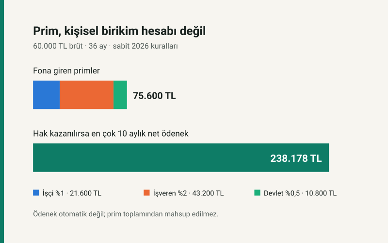
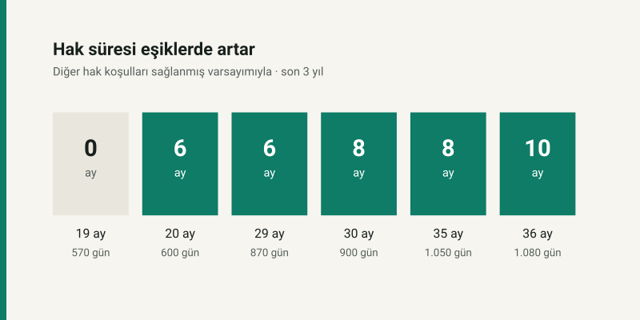

Kısa cevap
Kesinti: Sigortalının payı prime esas brüt kazancın %1'i, işverenin payı %2'sidir. Devlet payı 1 Mayıs 2026'dan beri %0,5. Üçü de fona aktarılır; işçi bordrosunda yalnız %1'lik işçi payı kesinti olarak görünür.
Hak: Fonun size borcu, ödediğiniz primlerin toplamı değildir. Son üç yılda en az 600 prim günü ve diğer koşullar gerekir. Ödeneğin süresi prim gününe göre 180, 240 veya 300 gündür.
Tutar: Aylık brüt ödenek son dört aylık prime esas brüt kazanç ortalamasının %40'ıdır; brüt asgari ücretin %80'ini aşamaz. Damga vergisi düşülür. Aşağıdaki örnek bir hak kararı değil, kuralların finansal modelidir.
60.000 TL brüt maaşta fona kim ne koyuyor?
2026'da, prime esas aylık kazancı 60.000 TL olan teşviksiz bir 4/a çalışanını ele alalım. Tutar asgari ücret olan 33.030 TL'nin üstünde, SGK tavanı olan 297.270 TL'nin altında. İşçi ayda 600,00 TL, işveren 1.200,00 TL, devlet 300,00 TL koyar. Aylık toplam 2.100,00 TL'dir. Devletin %0,5'lik payı, 30 Nisan 2026'da yayımlanan 11258 sayılı Kararla belirlendi; önceki %1 oranını 2026'nın tamamına uygulamak yanlış olur.
| Fona katkı | Oran | Bir ay | 36 ay |
|---|---|---|---|
| İşçi | %1 | 600,00 | 21.600,00 |
| İşveren | %2 | 1.200,00 | 43.200,00 |
| Devlet | %0,5 | 300,00 | 10.800,00 |
| Toplam | %3,5 | 2.100,00 | 75.600,00 |
36 ayın ayrıntısı: işçi 21.600,00 TL, işveren 43.200,00 TL, devlet 10.800,00 TL katkı verir. Üç yıllık 75.600,00 TL, çalışanın “fon hesabındaki bakiye” değildir. Bu, yalnızca aynı ücret ve Mayıs 2026 sonrası oranlar hiç değişmeseydi o çalışma için fona girecek primlerin toplamıdır. Geçmiş 36 ayın fiilî ödemesi değil; ücret, tavan ve devlet oranı geçmişte farklıydı. Fon ayrıca yatırım geliri elde eder ve yasadaki ödemeleri karşılar. İŞKUR'un fon tablolarında işsizlik ödeneği yanında teşvik ve destek ödemeleri de gider kalemidir.
Prim günleri hak süresini nasıl değiştirir?
Son üç yılda 600 gün işsizlik sigortası primi 180 gün (yaklaşık 6 ay), 900 gün 240 gün (yaklaşık 8 ay), 1.080 gün 300 gün (yaklaşık 10 ay) ödenek süresi sağlar. Bunlar yalnız süre eşikleridir. Hizmet akdinin sona erme nedeni, bitişten önceki son 120 gün hizmet akdine tabi olma ve işten ayrıldıktan sonra 30 gün içinde başvuru ayrıca değerlendirilir. Geç başvuru, mücbir sebep dışında, gecikilen sürenin toplam hak süresinden düşmesine yol açar.

Şemadaki karşılıklar: 20 ay / 600 gün → 6 ay; 30 ay / 900 gün → 8 ay; 36 ay / 1.080 gün → 10 ay. Eşikler “bir gün daha çalışınca birikiminiz artıyor” anlamına gelmez. 599 ve 600 gün arasında prim toplamı az değişir, fakat ödenek süresi bakımından hak eşiği aşılır. Sigorta mantığı tam burada görünür: ödeme, kişisel tasarruf getirisinden çok riskin gerçekleşmesine ve kanuni koşullara bağlıdır.
Aynı ücrette işsizlik ödeneği ne kadar olur?
Bu çalışan son dört ayda da 60.000 TL prime esas brüt kazanç bildirilerek çalışmışsa ortalamanın %40'ı 24.000,00 TL brüt ödenek eder. 2026 brüt asgari ücretinin %80'i 26.424 TL olduğundan bu örnekte tavan bağlamaz. Binde 7,59 damga vergisinden sonra aylık 23.817,84 TL net kalır. 1.080 prim günü ve diğer bütün koşullar sağlanır, kişi 10 ay boyunca işsiz kalırsa modelin en çok net ödeneği 238.178,40 TL olur. Daha erken işe başlama veya hak koşulunun sağlanmaması bu tutarı düşürür ya da sıfırlar.
Burada 75.600,00 TL fon primini 238.178,40 TL olası ödenekten çıkarıp “162.578,40 TL kâr” demek yanlıştır. Primler fona girdiği anda bireysel mülkiyet bakiyesine dönüşmez; işveren ve devlet payı da çalışanın cebinden çıkan tutar değildir. İşsizlik riski gerçekleşmeyen kişi hiç ödenek almayabilir. Gerçekleşen kişi ise kendi işçi payından çok daha fazla ödeme alabilir: havuzun işlevi budur.
Çalışan ve işveren açısından gerçek maliyet
İşçinin 60.000 TL brüt üzerinden görünen doğrudan kesintisi ayda 600,00 TL'dir. İşverenin 1.200,00 TL payı toplam istihdam maliyetinin parçasıdır. Ekonomik yükün ücret pazarlığı yoluyla zaman içinde kime yansıdığı, yalnız bordro satırına bakılarak ölçülemez; bu yazı böyle bir yansıma oranı iddia etmiyor. Devletin 300,00 TL payı ise bütçeden fona aktarılan kamu kaynağıdır. Bu üç akışın finansörü farklıdır; “çalışandan toplam %3,5 kesiliyor” demek doğru değildir.
Başka bir sınır da prime esas kazanç tavanıdır. Brüt maaş 297.270 TL'yi aşsa bile örnek model prim ve ödenek hesabında bu tavanın üstünü prime esas kazanç saymaz. Ödenek ayrıca brüt asgari ücretin %80'iyle sınırlandığı için ücret arttıkça ödenek sınırsız artmaz. Kendi son dört aylık ücretinizle sonucu görmek için işsizlik maaşı hesaplama aracını kullanabilirsiniz; bu yazı fonun finansmanını açıklamak için sabit bir örnek kullanır.
Yöntem ve sınırlar
- Bu, Türkiye ortalaması ya da İŞKUR'un belirli bir kişiye verdiği karar değildir. 60.000 TL brüt ücretin, her ay 30 günün ve Mayıs 2026 sonrası kuralların 36 ay sabit tutulduğu karşı olgusal bir modeldir. 2023–2026 gerçek prim toplamı olarak okunmamalıdır.
- Ödenek tutarında son dört ayın ücretinin de 60.000 TL olduğu varsayıldı. Ücret dalgalanırsa dört aylık ortalama değişir. Hesap, bordro motorunun 2026 asgari ücretini, SGK tavanını, damga vergisini ve 4447 m.50 kurallarını okur.
- Şemadaki 20, 30 ve 36 ay, her ayın 30 prim günü olduğu kesintisiz örnektir. Gerçek hak değerlendirmesi “takvim ayı”yla değil SGK'da bildirilen prim günleriyle yapılır.
- Devlet payının %0,5 oranı 1 Mayıs 2026'dan itibaren geçerlidir. Önceki dönem oranı farklıdır; örnek geriye doğru yasal oran serisi kurmaz. Mevzuat veya 2027 ücret parametreleri değişirse model de güncellenmelidir.
Birincil kaynaklar
- 4447 sayılı İşsizlik Sigortası Kanunu, m.49–51: fon, prim, hak koşulları ve ödenek hesabı (14 Ekim 2026'da kontrol edildi).
- 11258 sayılı Cumhurbaşkanı Kararı, 30 Nisan 2026 tarihli Resmî Gazete: devlet payı %0,5, yürürlük 1 Mayıs 2026.
- İŞKUR, İşsizlik Sigortası Hizmetleri: başvuru, prim günü, süre ve tutar açıklamaları (14 Ekim 2026'da kontrol edildi).
- İŞKUR aylık bülteni, İşsizlik Sigortası Fonu gelir-gider tablosu: fonun gider türleri (14 Ekim 2026'da kontrol edildi). Bu yazıdaki tutarlar bu tablodan alınmadı; örnek modelde hesaplandı.
- 2026 asgari ücret, SGK tavanı ve damga oranı: sitenin bordro motoru parametreleri. Makalenin sayıları
prim.jsmodülünden üretilir;sayi-testi.jsmetin ve eşikleri denetler.
Sık sorulan sorular
İşsizlik sigortası primi kişisel hesabımda birikir mi?
Hayır. İşçi, işveren ve devlet payları İşsizlik Sigortası Fonunda toplanır. Hak, kişisel bakiye hesabından değil kanuni koşullardan doğar.
2026 işsizlik sigortası prim oranları nedir?
İşçi %1, işveren %2; devlet payı 1 Mayıs 2026'dan itibaren %0,5'tir. Bu oranlar prime esas kazanca uygulanır.
600, 900 ve 1.080 gün neyi değiştirir?
Diğer koşullar da varsa ödenek süresini sırasıyla 180, 240 ve 300 güne çıkarır. Bunlar son üç yıldaki işsizlik sigortası prim günleridir.
Prim ödeyen herkes işsizlik ödeneği alır mı?
Hayır. İşten ayrılma nedeni, son 120 gün hizmet akdine tabi olma, son üç yıldaki prim günleri ve 30 gün içinde başvuru ayrıca incelenir.